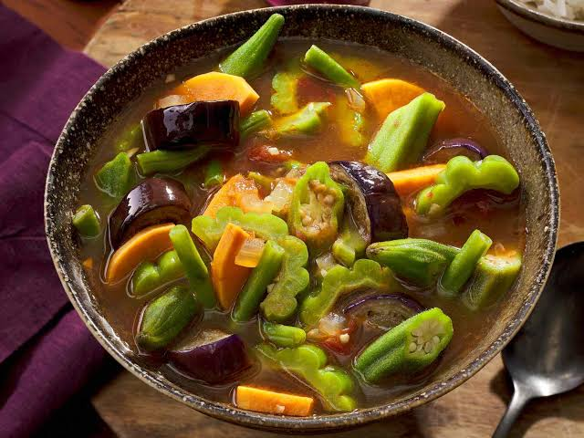
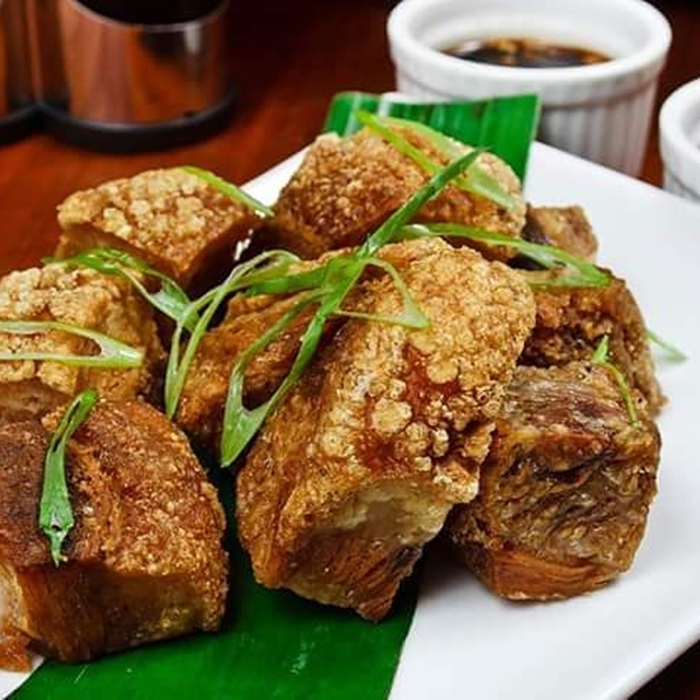

Bicol Express
Pork slices simmered in thick coconut milk, plenty of chili peppers, and shrimp paste. It’s rich, creamy, and very spicy—originated from the Bicol Region.

Pinakbet
Mixed vegetables like squash, eggplant, okra, and bitter gourd cooked with shrimp paste (bagoong). A classic healthy dish from Ilocos.

Bagnet
Crispy deep-fried pork belly with shatteringly crunchy skin. Best dipped in spiced vinegar, also from Ilocos.